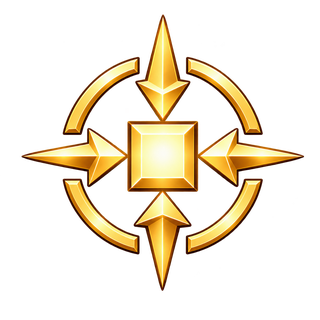

OPENMS / REUSABLE DIFFICULTY OVERLAYS
独立星级资源 · 统一左上角位置
初级一星，中级二星，高级三星；三星排列为上方一颗、下方两颗。
三张透明资源独立保存，由展示层叠加；八类单难度图案共用同一位置。
中级 · 2 星
高级 · 3 星
破境
ability.time
初级32px 48px 72px
中级32px 48px 72px
高级32px 48px 72px
神速
ability.bvs
初级32px 48px 72px
中级32px 48px 72px
高级32px 48px 72px
通明
ability.stnb
初级32px 48px 72px
中级32px 48px 72px
高级32px 48px 72px
盲扫破境
ability.time.nf
初级32px 48px 72px
中级32px 48px 72px
高级32px 48px 72px
盲扫神速
ability.bvs.nf
初级32px 48px 72px
中级32px 48px 72px
高级32px 48px 72px
盲扫通明
ability.stnb.nf
初级32px 48px 72px
中级32px 48px 72px
高级32px 48px 72px
盲扫精工
ability.thrp.nf
初级32px 48px 72px
中级32px 48px 72px
高级32px 48px 72px
标旗精工
ability.thrp.fl
初级32px 48px 72px

中级32px 48px 72px
高级32px 48px 72px
初级 · 1 星
下载独立透明 PNG · 64px WebP中级 · 2 星
下载独立透明 PNG · 64px WebP高级 · 3 星
下载独立透明 PNG · 64px WebP统一位置与适用范围
星级区：左 0%、上 0%、宽高 36%。主体区：左 21%、上 21%、宽高 79%，按透明边界裁切后居中显示。
现有 8 类 × 3 难度共 24 种组合均检查了主体与星级的像素重叠。32px 下可比较星数，单颗星的金属细节需看较大尺寸。
未来带单一初／中／高级的收集、计数、收藏、隐藏和赛事单项称号也复用该资源与角标区；新主体图必须重新做位置验收。
三阶精工、跨难度合计和比较、无单一难度称号不自动附加三星；赛事金属仍表示名次。未来类别尚无本套源图，本稿未冒充已完成其美术验收。